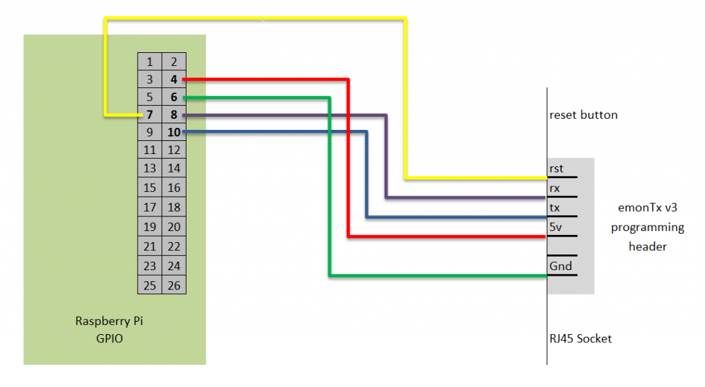

This week I got my fully assembled emonTx V3 with RF 433Mhz module. After connecting the CT and switching it on with the AC Power Adapter the red led stays on always. And it seems it is not sending any data to the emon Base.
What can I do?
/Marco
Archived Forum |
|
emonTx V3 red led stays onSubmitted by Marco on Sat, 18/04/2015 - 08:53This week I got my fully assembled emonTx V3 with RF 433Mhz module. After connecting the CT and switching it on with the AC Power Adapter the red led stays on always. And it seems it is not sending any data to the emon Base. What can I do?
/Marco » |
Re: emonTx V3 red led stays on
The red LED is turned on at the beginning of the initialisation procedure, and turned off after the radio module has been initialised, the presence of the CT's tested and the presence of the AC adapter tested. If the AC adapter is detected, the LED flashes 10 times. If that is not happening, then the usual cause is the radio module is not working.
You should email the shop and explain your problem.
Re: emonTx V3 red led stays on
Hi Marco,
I had the exact same thing, received my pre-assembled eMonTX v3.4 last week and red-led remained on. Allthough the featureset of the v3.4 shows ;
Features
.
RF Radio: HopeRF RFM69CW 433Mhz
Also the v3.4 (v1.6) sketch now defaults to the RFM69CW
I fixed my issue with the red-led remaining on by modifying the v1.6 sketch (as i could not see anything coming in on the emonhub upon poweron of the eMonTX v3.4.
#define RF69_COMPAT 1 // Set to 1 if using RFM69CW or 0 is using RFM12B
to
#define RF69_COMPAT 0 // Set to 1 if using RFM69CW or 0 is using RFM12B
I don't understand why but it seems my unit was assembled with the RFM12B. Confusing to say the least and wondering how pre-assembled units get tested before they leave for shipment to end-customers.
Hope this solves your issue as well.
Kind regards
Patrick
Re: emonTx V3 red led stays on
Patrick, as final proof, does the chip on your radio module have "RF69" on it, or could we have a picture of the module to identify it? If you're right (and it sounds very much as if you are), G&T need to be alerted to the problem.
That '#define' line operates a switch inside JeeLib that completely changes the radio software, so it's not surprising that it doesn't work.
Re: emonTx V3 red led stays on
Hi,
Attached an image of my recently received v3.4 pre-assembled unit. This is my second until, my first one arrived some weeks ago, exact same issue there, so the two emonTx v3.4 units i have are identical.
This is my second until, my first one arrived some weeks ago, exact same issue there, so the two emonTx v3.4 units i have are identical.
From what i read the unit is easily identified by the number of pins (7 on each side for the RFM12 against 8 for the RFM69, but am not sure.)
kind regards
Patrick
Re: emonTx V3 red led stays on
"From what i read the unit is easily identified by the number of pins (7 on each side for the RFM12 against 8 for the RFM69, but am not sure.)"
The RFM69CW and the RFM12B are physically interchangeable hence the "switchable" firmware (and the confusion) as either can be fitted. Both boards have 7 contacts on opposite edges and they share the same footprint and pinout.
Your image is of a rfm12, the IC is a dual in-line on a rfm69 it's square, the passive smt componants are not clustered in one area there are 2 on the other side to the rest and there is no "RF69" printed on the IC as Robert has mentioned.
definitely use
#define RF69_COMPAT 0 // Set to 1 if using RFM69CW or 0 is using RFM12B
Paul
Re: emonTx V3 red led stays on
Hi Paul,
attached an image of my emonTx, looks similar like Patrick's. Can you confirm that this is a RFM12 as well, please.
Just wonder how to change the sketch now, as I haven't ordered the USB to UART. Assumed 'Fully assembled' means it works.....
/Marco
Re: emonTx V3 red led stays on
Yes that looks like an rfm12b, contact the shop via the link Robert provided above and include a link to this thread. You do need #define RF69_COMPAT 0 set in the sketch.
Where in the world are you? do you know anyone with a programmer? do you have a raspberry pi and 5 F-F wire links or an arduino ?
Paul
Re: emonTx V3 red led stays on
For reference...
Pin 1 (antenna) is top left, it is drawn bottom right on the data sheet.
The two RFM69CWs are 868 MHz (left) and 433 MHz (right) versions. The 868 MHz version has two empty pairs of pads on the top edge, the 433 MHz version has one empty pad and the second is occupied by a capacitor
Re: emonTx V3 red led stays on
That is very useful, perhaps worthy of moving to a thread titled "identifying rfm12 and rfm69 modules" so it comes up in searches and link from here.
Although I couldn't find appropriate images, I would like to tag on the fact that the rfm12 can also be found sporting the SMT type xtal as per the rfm69 (just in case anyone uses the can as an identifier)
RFM2Pi fitted with smt xtal type RFM12B from Martin Harizanov.
RFM12B fitted with smt xtal and exposed 16pin DIL chip
Paul
Re: emonTx V3 red led stays on
Hi Paul,
I am from Germany - and I've got a raspberry pi and F-F wires. Is there a way to upload a sketch to the emontx with the raspberry pi?
Thanks in advance,
/Marco
Re: emonTx V3 red led stays on
You can indeed program the emontx from the Pi, there are multiple ways to it and I do not know your skill level so I will breeze over it and if you need more info just ask. The connections are as shown but you can omit the red 5v lead if you prefer to use a mini usb to power the emontx rather than via the Pi. The bottom line is you need a good stable voltage so disconnect any sensors etc.
The easiest method is by installing the arduino IDE to a Pi with a display and keyboard so that you can access the GUI desktop (startx). You will also need some small modifications to use the GPIO which can be found with some instructions in this repo https://github.com/pb66/avrdude-rpi
You can also just install arduino-core and the modifications from the repo above to download and install the compiled hex via a ssh connection rather than installing the IDE and libraries etc.
Paul
Re: emonTx V3 red led stays on
Glyn thinks http://openenergymonitor.org/emon/node/10491 that the reverse has also happened: that units fitted with the RFM69 Radio have been shipped with the firmware set for the RFM12B. I suspect the same offer (programmer, cable, return for reprogramming) applies. In any event, contact the shop for clarification.
Re: emonTx V3 red led stays on
Hi guys,
Really sorry about this, I'm trying to get to the bottom of what has happened. There seems to have been a firmware / RF module confusion at manufacture. If have a USB to UART cable please post the startup debug serial output (9600 baud) on this thread. This will tell us what firmware your unit is running.
As I mentioned in my thread: http://openenergymonitor.org/emon/node/10491
We are happy to cover postage to return effected units to be reprogrammed and or issue USB to UART programmers at no cost to yourselves.
Again very sorry about this.
Re: emonTx V3 red led stays on
Hi Glyn,
No harm done for me, was able to fix it myself by changing the setting in the sketch. Just took me some time to figure this all out (but learning on the way as well so thats a good thing ;)
Also good this article has evolved to what it is now, for sure wil help possible other affected users.
Kind regards
Patrick
Re: emonTx V3 red led stays on
Hi Glyn,
in the meanwhile I managed as well to upload the amended sketch.
Thanks for the help,
/Marco